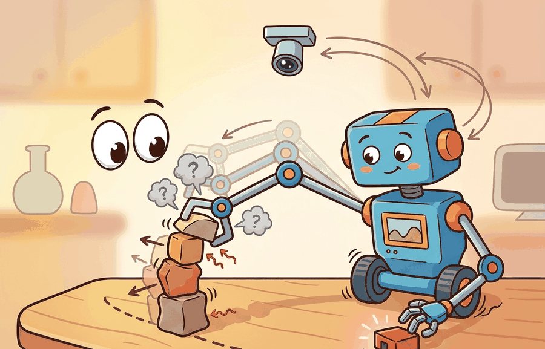

Section 6.2: Rigid-body dynamics; the manipulator equation
"The world is an exam where the answer key changes after every action."

Figure 6.2A: Section 6.2: Rigid-body dynamics; the manipulator equation is easier to reason about when the figure shows the concept, evidence path, and action consequence in one physical situation.
A Careful Control Loop
Big Picture
Rigid-body dynamics; the manipulator equation is one lens on dynamics and simulation math. We study it because an embodied agent needs decisions that survive contact with noisy sensors, delayed effects, and changing environments.
What This Section Develops
This section develops the technical contract for Rigid-body dynamics; the manipulator equation into a usable mental model. First we define the object of study, then we connect it to the agent loop, then we test it with a compact implementation.
The key question is practical: what must the agent know, what can it observe, what action is available, and what evidence shows that the action worked?
Action Is The Test
A representation earns its place when it changes the measurable action interface. In Rigid-body dynamics; the manipulator equation, the reader should keep asking which decision becomes easier, safer, or more reliable.
Theory
We can view the agent at time $t$ as receiving an observation $o_t$, maintaining an internal state estimate $\hat s_t$, choosing an action $a_t$, and observing a consequence $o_{t+1}$. The section topic changes one part of this loop, but the loop itself stays fixed.
The practical design rule is to make the interface explicit. Inputs, outputs, assumptions, timing, and failure modes should be named before a model is trained or a controller is tuned.
Mechanism
The mechanism is a sequence of transformations: observe, encode, estimate, choose, execute, monitor. Each transformation should have a measurable contract, otherwise debugging collapses into guessing.
Worked Example
Consider a simulated tabletop agent. A camera observation locates a block, a state estimator converts pixels into an approximate pose, a policy selects a motion, and a controller executes that motion. If the block slips, the loop must notice and recover rather than declare success too early.
# Rigid-body dynamics; the manipulator equation: keep the section idea tied to observable evidence.
# Run this diagnostic probe before trusting the maintained library path.
from dataclasses import dataclass
@dataclass
class EmbodiedStep:
observation: str
action: str
result: str
step = EmbodiedStep("rigid_body_dynamics_the_manipu", "act", "observe consequence")
print(step)
Code Fragment 6.2.1 packages observation, action, and result in EmbodiedStep so dynamics rollouts keep cause and consequence together.
Library Shortcut
The hand-built fragment keeps physical assumptions visible. MuJoCo and MJX provide fast articulated dynamics, Drake emphasizes optimization and system structure, Pinocchio gives efficient rigid-body algorithms and derivatives, and Isaac Lab scales robot learning workflows on GPU-backed simulation. The shortcut removes boilerplate, but the hand-built version remains the debugging oracle.
Practical Recipe
Write the observation, action, and success metric before choosing a model.
Build a baseline that is simple enough to debug by inspection.
Add the library implementation only after the baseline behavior is understood.
Record failures as structured cases: perception error, state error, planning error, control error, or evaluation error.
Run at least one perturbation test before trusting the result.
Common Failure Mode
The common mistake is to evaluate a component in isolation and then assume the closed loop will inherit that score. Embodied systems often fail at the interfaces between components.
Practical Example
A robotics team using Rigid-body dynamics; the manipulator equation should log not only final success, but intermediate observations, chosen actions, controller status, and recovery events. The logs reveal whether the method is solving the task or merely passing the easiest episodes.
Research Frontier
Frontier systems increasingly combine learned policies with structured constraints, tool use, large datasets, and simulation-driven evaluation. Claims from vendor releases should be treated as frontier watch items until independent evaluations or reproducible artifacts appear.
Self Check
Can you name the observation, state estimate, action, success metric, and most likely failure mode for Rigid-body dynamics; the manipulator equation? If not, the system boundary is still too vague.
Production Pattern
Rigid-body dynamics; the manipulator equation sits inside the Part II robotics contract: geometry defines where things are, kinematics defines what motion is possible, dynamics defines what motion costs, control defines how errors are corrected, and sensing defines what the agent can know on time.
Use the manipulator equation as an accounting identity for inertia, Coriolis terms, gravity, and actuation. This makes the section useful to students, builders, and researchers at the same time: the idea has an intuitive role, a formal interface, a runnable check, and a failure mode that can be reproduced.
Mechanism To Watch
Dynamics adds the cause of motion: forces, torques, inertia, contact impulses, and numerical integration. Keep units, solver step, contact parameters, and energy behavior visible.
Library Choices And Verification Checks
Tool or Library
What It Handles
Verification Check
MuJoCo
runs articulated dynamics and contact simulation for robot learning experiments
Verify timestep, solver parameters, contact settings, and reset semantics.
MJX
runs articulated dynamics and contact simulation for robot learning experiments
Verify timestep, solver parameters, contact settings, and reset semantics.
Drake
models dynamical systems, multibody plants, optimization, and controllers
Verify scalar type, plant finalization, frame convention, and solver status.
Pinocchio
computes articulated-body kinematics, dynamics, and derivatives
Verify model frames, joint ordering, and derivative convention against the URDF.
Isaac Lab
scales robot-learning simulation with GPU workflows and sensor-rich scenes
Verify environment parity, reset distribution, and logged seeds before training.
Implementation Recipe
Use this recipe when turning Rigid-body dynamics; the manipulator equation into code, a simulator experiment, or a robot diagnostic. The point is not to use every library. The point is to keep the hand-built baseline and the maintained-tool path comparable.
Specify mass, inertia, actuator limits, contact model, timestep, and solver tolerance before running a rollout.
Run one free-motion test and one contact test with logged energy, constraint violation, and penetration depth.
Compare the hand calculation with MuJoCo, Drake, Pinocchio, or MJX on the same model and timestep.
Store solver settings, random seed, initial state, trajectory, and failure labels in one artifact.
Scale to Isaac Lab or GPU-parallel simulation only after a small model passes deterministic checks.
Latency And Evidence Gate
Before comparing results, save one artifact that contains inputs, outputs, units, timestamps, latency, configuration, seed, metric definition, and failure labels. A result is convincing only when the baseline and the shortcut were evaluated by the same script on the same panel.
# Evidence record for Rigid-body dynamics; the manipulator equation.
# Fill the fields before comparing a hand-built baseline with a library run.
from dataclasses import dataclass, asdict
@dataclass
class EvidenceRecord:
section: str
topic: str
tool: str
units_check: str
latency_ms: float
metric: str
failure_label: str
record = EvidenceRecord(
section="6.2",
topic="Rigid-body dynamics; the manipulator equation",
tool="MuJoCo",
units_check="frames, units, and timestamps verified",
latency_ms=20.0,
metric="construct-matched success metric",
failure_label="filled after the named perturbation test",
)
print(asdict(record))
Code Fragment 6.2.2 stores topic, tool, units_check, latency_ms, metric, and failure_label so Rigid-body dynamics; the manipulator equation can be compared across the hand-built baseline and the maintained-library path.
Exercise Extension
Extend the section exercise by adding one perturbation specific to Rigid-body dynamics; the manipulator equation and one latency or uncertainty check. Save the result in the EvidenceRecord schema, then explain which library output you trust and why.
Failure Analysis Pattern
A simulation that looks smooth can still be physically misleading. Check timestep sensitivity, contact stiffness, damping, friction cones, and actuator saturation before trusting policy performance. For this section, first reproduce one tiny case by hand, then rerun it through MuJoCo, MJX, Drake, Pinocchio, Isaac Lab. If the two disagree, inspect conventions and timing before changing th
Technical Core
Rigid-body dynamics; the manipulator equation needs a topic-native core: variables, equations or system contracts, an algorithmic procedure, an expected output, and a failure diagnosis. Figure 6.2.T summarizes the chain this section must preserve when moving from a teaching example to a real embodied system.
Figure 6.2.T: The technical core for Rigid-body dynamics; the manipulator equation connects assumptions, model, algorithm, evidence, and failure analysis.
Simulation step with contact-aware evidence logging
Assemble mass, Coriolis, gravity, actuator, and contact terms under one unit convention.
Integrate with a fixed timestep and record solver status, penetration depth, and energy drift.
Compare the same control input across a hand model and a maintained simulator.
Flag disagreement by source: inertia convention, contact solver, damping, actuator limits, or timestep.
Technical Contract For Rigid-body dynamics; the manipulator equation
Contract Field
What To Specify
Why It Matters
State and observation
Variables, units, timestamps, frames, and uncertainty.
Prevents a model score from being mistaken for robot capability.
Action interface
Command type, limits, update rate, and safety fallback.
Makes the learned or planned output executable.
Evidence artifact
Trace, metric, configuration, seed, and failure label.
Allows baseline and library path to be compared in one pass.
Tool path
MuJoCo, Drake, Isaac Sim, Gazebo, PyBullet, SAPIEN, NumPy
Shows the practical library route after the mechanism is understood.
# Technical-core evidence record for Rigid-body dynamics; the manipulator equation.
# Expected: a method-specific trace with assumptions, metric, and failure label.
record = {
"section": "6.2",
"technical_core": "dynamics and simulation",
"method": "Simulation step with contact-aware evidence logging",
"evidence": "same-config trace with expected output and failure label",
"tools": "MuJoCo, Drake, Isaac Sim, Gazebo, PyBullet, SAPIEN, NumPy",
}
print(record)
Code Fragment 6.2.T records the expected technical evidence for Rigid-body dynamics; the manipulator equation: method, tool path, artifact, and failure label.
Expected output is a state trace with bounded energy error for free motion, bounded penetration for contact, and an explicit solver-status field. Exploding velocity usually points to timestep, stiffness, or mass-matrix errors.
Failure Mode To Test
A dynamics section is not validated by a plausible animation. It is validated by conserved quantities where they should hold, stable contact where contact is expected, and reproducible divergence when a parameter is perturbed.
e model.
Section References
Canonical support for Rigid-body dynamics; the manipulator equation: Modern Robotics; Murray, Li, and Sastry; Siciliano et al.; LaValle; and the official documentation for Drake, MuJoCo, Pinocchio, CasADi, python-control, GTSAM, ROS 2, and OpenCV as applicable.
Use these sources to verify notation, frame conventions, solver assumptions, and library behavior before comparing hand-built and maintained-tool implementations.
Key Takeaway
Rigid-body dynamics; the manipulator equation is useful when it makes the perception-action loop more reliable, not when it merely adds a more impressive model name.
Exercise 6.2.1
Design a method-matched experiment for Rigid-body dynamics; the manipulator equation. Specify the environment, observations, actions, metric, one perturbation, and the library output you would compare against the hand-built baseline.